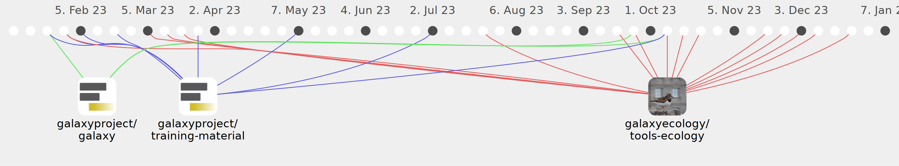

yvanlebras

Commits all-time: 1408
Commits last year: 130

(67)
- 415a1e6
- bf92147
- ed8de4d
- 30b4f24
- 869e307
- 8b8b91c
- 5b5841e
- 34204fe
- beec4d8
- e4fd4b9
- 9056bb9
- 5a9381e
- 78278aa
- 65e52bc
- caf38bc
- fcb04b3
- 0690a6d
- 8218db1
- 1a7bc57
- eeded47
- 647eada
- 138b533
- c427aac
- b31ba05
- 13fcc2e
- 095d2d9
- a0060c9
- b590bd3
- e95abd8
- 193570b
- 529e3a2
- f105bde
- 72858a3
- 703240f
- 7f064db
- f2ceeb6
- 28fa25a
- 8b6c7a6
- 6e69845
- b583734
- f8b085f
- a824ba7
- b9a0ddc
- 67ab296
- 9088518
- 4f3aacd
- 64b8dbc
- 4e32033
- b2aa95e
- 5716bfe
- e3a5163
- cf83ff1
- 004dbf9
- 218f0ac
- caac844
- 3339a04
- 7a11bc5
- cc5f372
- 5ad8e18
- 9ab0fad
- 71e5770
- c39b924
- 6a4221c
- 58b293a
- a725051
- fb730f1
- f4d9402
(63)
- 89b0aca
- efb7b6c
- dc665dd
- cc05a48
- 5281eee
- a777d12
- 0799e2c
- c2c4d46
- 9e27629
- 5e67d6c
- 947528e
- 4180e51
- 0f2c787
- 2c40b68
- 3149b75
- 2bbfeba
- 1e862e8
- 768ad05
- fd765b9
- 4e41e25
- aa18069
- b560e55
- 11a7ce4
- 79c114c
- 18bacec
- 3fa03bc
- 5dbdcc6
- 24da8c1
- 236114a
- fbeb9f8
- 8081b33
- 0364c33
- 330f111
- 8e64c9e
- f4dbca7
- 817d16b
- 5811e1d
- b724d57
- b56f615
- 39fcc1c
- 7b0622e
- f538442
- f12df1c
- 582a97e
- e116aea
- 060a21e
- b25afb4
- c3a771c
- 698fa92
- eb732c7
- 7280e33
- f0a7e67
- 0453c0f
- 06c86b0
- e103eb9
- 66ac55e
- 3bacd4a
- 35ad311
- 90d8ef5
- a9bb108
- 79b0fee
- 9a3eba6
- e519c7f